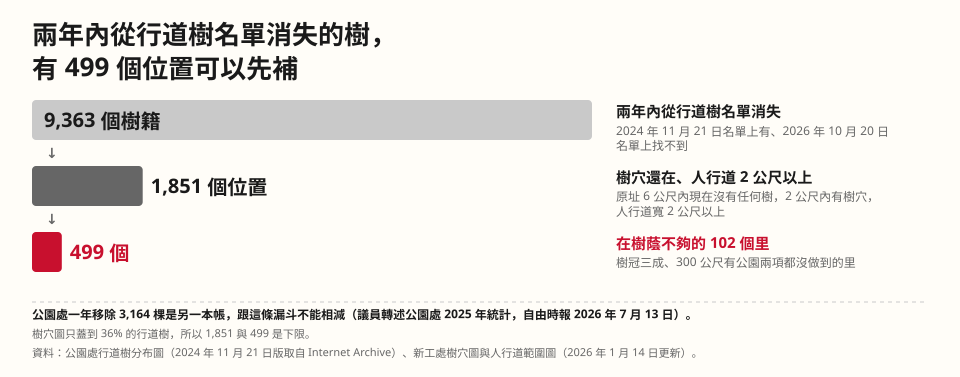

四、 兩年內 9,363 個樹籍（每棵樹的編號）從名單上消失，其中 499 個在樹蔭不夠的里，樹穴還在、人行道夠寬

從 9,363 篩到 1,851，其中一條是人行道不到 2 公尺缺株時不再補植（公園處選種原則）。全市有 6,846 棵行道樹站在這種人行道旁，照規則缺株時不再補植。
最快的起點是這 499 個舊樹穴。
兩本帳的差別、每一層少掉什麼、2 公尺規則的出處與敏感度，見最後的資料。
五、 修剪、病害防治、天災搶修每年 12 到 3 月發包，天災搶修的契約變更集中在 5 月與 9 月
這頁看得到發包與契約變更的月份，檢修的實際日期不在這些資料裡。
年度預約工程集中在 12 到 3 月發包，天災搶修的契約變更集中在 5 月與 9 月；修剪每年不超過枝葉的 25%，生長快的樹種 35%。
決標金額、落葉與開花月份、健康檢查見最後的資料。
六、 100 天內先去看 499 個舊樹穴，每年重算兩項都做到的里有幾個
現在兩項都做到的里是 52 個，住 26.0 萬人；每年重算一次，看這個數字有沒有往上。
| 負責局處 | 所需資料 | 成本 |
|---|---|---|
| 工務局公園路燈工程管理處（行道樹、公園樹、選種、小樹保衛站）；工務局新建工程處（人行道與樹穴圖）；捷運工程局（工程移植與復舊） | 第一級 1,851 個位置的現勘結果，先看樹蔭不夠的里裡的 499 個；逐筆移除、移植、補植紀錄（日期、樹籍、位置、原因）；樹穴對樹籍的對應；樹冠實測 | 公園處 114 年度修剪、病害防治、天災搶修與樹木調查的決標合計約 1.13 億元，這是契約金額的上限，實際花了多少，本頁沒有算；開放逐筆紀錄是把既有資料匯出 |
| 第一週就能做：任何人 | 每週抓一次開放檔，依樹籍編號比對，留快照 | 零成本，本頁就是這樣做的 |
七、 資料踩到的坑
分兩組：資料本身的問題，與本作品自己踩過的坑。每條附資料來源。「主辦清單內」是活動頁列給這一題的資料集，「主辦清單外」是本作品另外找來的；以下只標內或外。
資料本身的問題
- 3,164 是公園處帳上的年度減項。含災損 473；八成是自然死亡、腐朽、病蟲害、天災。
資料：工務局公園路燈工程管理處回覆議員的年度統計，經自由時報報導轉述（主辦清單外） - 總數少 2.4 萬，大半是移撥。114 年帳面減 24,537 株裡 23,116 株是鄰里公園移撥給區公所，樹還在。
資料：臺北市議會「工務部門質詢速記」115 年 8 月（主辦清單外） - 同一個資料集是三個檔。行道樹、樹穴、公園樹三份。
資料：工務局公園路燈工程管理處「臺北市行道樹及公園樹木分布圖」data.gov.tw 128274（主辦清單內） - 樹穴圖的多邊形不全是樹穴。56,720 個多邊形裡樹穴 50,904 個、花圃 5,816 個；而且只蓋到 36% 的行道樹。
資料：工務局「臺北市人行道固定設施物＿樹穴」data.gov.tw 134908（主辦清單內） - 3-30-300 的「3」本頁沒有量。每戶窗外看得到幾棵樹，需要逐戶的窗景資料；願景照樣列，判斷只用樹冠與公園兩項。
資料：Konijnendijk 2023，Journal of Forestry Research（主辦清單外） - 公園樹的胸徑有一成多是空白。公園樹檔 72,011 棵裡 9,266 棵胸徑是 0 或空白，74 個公園整園沒填，例如二二八和平公園 1,058 棵。
資料：工務局公園路燈工程管理處「臺北市行道樹及公園樹木分布圖」公園樹檔，data.gov.tw 128274（主辦清單內） - 更新日欄是匯出時間。全檔只有一個值。
資料：data.gov.tw 128274 行道樹檔（主辦清單內） - 樹籍編號會重編。名單消失的樹裡 519 個兩公尺內就有新編號。
資料：data.gov.tw 128274 兩個版本（主辦清單內；2024 年 11 月版取自 Internet Archive，主辦清單外） - 「含移樹履歷查詢」：查了兩棵，系統沒有顯示履歷。
資料：公園處「臺北市行道樹路燈資訊網（含移樹履歷查詢）」geopkl.gov.taipei（主辦清單內） - 樹冠面積是株數乘 16。
資料：臺北市政府「114 年推動性別平等工作成果報告」，經鏡週刊專欄轉述（主辦清單外） - 名單內也有不抗風、會竄根的樹。39 種的基本資料裡，枝條抗風性「不佳」的有 5 種（印度紫檀、烏桕、苦楝、阿勃勒、鳳凰木），根竄性「有」的有 3 種（大花紫薇、小葉欖仁、無患子）。
資料：公園處「林蔭大道選擇樹種基本資料」39 張，pkl.gov.taipei（主辦清單外） - 小樹保衛站只有爭議案件。79 則，座標概略。
資料：公園處「小樹保衛站」treesmatch.gov.taipei（主辦清單外）
我們踩過的坑
- 名單上消失的樹籍，有些只是換了編號或移到別處。9,363 個消失的樹籍裡，原地 6 公尺內沒有行道樹的 4,751 個，再扣掉旁邊有公園樹的，剩 4,611 個。只看行道樹時，門檻從 1 公尺放到 10 公尺，數字從 8,446 降到 2,898。
資料：data.gov.tw 128274 兩個版本 - 消失的原因常是移植。松仁路是捷運東環段工程移植，和平東路三段 151 號移植到安全島，敦化南路一段竄根移植後補植樟樹。
資料：公園處「小樹保衛站」（主辦清單外） - 樹穴還在，人行道不到 2 公尺的就不補植。人行道不到 2 公尺的，選種原則說缺株時不再補植；樹穴還在的 1,925 個裡有 72 個在這種人行道上，2 個找不到所在的人行道。
資料：公園處選種原則；工務局人行道範圍圖（主辦清單內） - 人行道寬度有兩欄。人行道範圍圖有「寬度」（中位 2.17 公尺）與「人行道淨寬」（中位 1.26 公尺）。選種原則講的是人行道寬度，淨寬已經扣掉樹穴等設施，所以本作品用寬度欄；改用淨寬欄，第一級從 1,851 個變成 639 個。
資料：工務局新建工程處「臺北市人行道範圍圖」data.taipei 欄位說明（主辦清單內） - 資料上空著的樹穴，現場約七分之一真的空著。這是街景抽查的結果，其餘要去現場看。
資料：另一參賽作品的街景抽查，出處見最後的資料（主辦清單外） - 里層老人占比和樹數幾乎沒有關係。區層看起來有關，里層相關係數 +0.05。
資料：民政局「臺北市各里人口數按年齡分」（主辦清單外） - OpenStreetMap 裡有 146 處公園是由多段邊界組成的（例如中正紀念公園、新生公園、台北植物園）。只讀標籤、不讀各段邊界時，這些公園不會被算進「300 公尺內有公園」，樹蔭不夠的里會多出 27 個；本作品已把各段邊界接起來再算。
資料：OpenStreetMap，經 Overpass 查詢（主辦清單外；© OpenStreetMap 貢獻者，ODbL）
資料
有什麼資料
主辦清單內
- 臺北市行道樹及公園樹木分布圖（data.gov.tw · CSV/JSON）：一個資料集三個檔，行道樹、公園樹、公園處樹穴，沒有移除履歷。
- 臺北市人行道固定設施物＿樹穴（data.gov.tw）：新工處的樹穴圖，只蓋到 36% 的行道樹。
- 臺北市人行道範圍圖（data.taipei · JSON）。
- 臺北市公園基本資料（data.taipei · JSON）：沒有樹數。
- 臺北市行道樹路燈資訊網（含移樹履歷查詢）（公園處）：查了兩棵，系統沒有顯示履歷。
- 官方註「逐年移除紀錄與原因未完整開放，可用模擬資料」；本作品用的是開放資料與公開公告。
另外取得的資料（主辦清單外）
- 網頁存檔（Wayback）的 2024 年 11 月舊檔；內政部國土測繪中心村里界圖；
- 臺北市各里人口數按年齡分（data.taipei）；
- 政府電子採購網的公園處公告（經歐噴資料庫）：天災搶修、褐根病、修剪的預約工程金額；
- Meta 樹冠高度圖 v2（Meta AI／DataForGood，CC BY 4.0）與 OpenStreetMap 公園範圍（ODbL），本作品用來自己算里層樹冠覆蓋率與離公園 300 公尺的面積比例；另一參賽作品的街景抽查樹穴；
- 都發局「臺北市都市計畫土地使用分區面積」；公園處「行道樹樹種選擇原則」與 39 種優良樹種基本資料；公園處小樹保衛站的逐案說明；
- 市議會工務部門質詢速記；3-30-300 原則（Konijnendijk 2023）；國土管理署「市區道路及附屬工程設計規範」；
- 寫到台北行道樹的文學作品五件（只寫摘述）；
- 新聞轉述的議員統計、市府報告、衛星樹冠。
本頁比對的是 2024-11-21 的行道樹名單與 2026-10-20 的現況，名單每週重抓一次再比。
各章的完整內容
第一章 可種區域：全市總量表、各區人行道與好種但樹少
| 臺北市 | 27,180 公頃 | 100% |
| 公有地 | 全市合計：本頁未計 | |
| 人行道（新工處人行道範圍圖） | 368.0 公頃 | 1.35% |
| 其中寬 2 公尺以上，照選種原則能種喬木：人行道上的可種樹區 | 286.5 公頃 | 1.05% |
| 公園：公園裡的可種樹區，用整個公園面積 | 688.1 公頃 | 2.53% |
| 可種樹區合計（兩列綠底相加） | 974.6 公頃 | 3.59% |
人行道上的可種樹區約 11.0 座大安森林公園，公園約 26.5 座，合計約 37.6 座（大安森林公園 25.94 公頃）。
用長度算：人行道總長 1,214.8 公里（兩側分開算），寬 2 公尺以上 700.2 公里（58%）；不到 2 公尺的 514.6 公里（42%）照選種原則不再補植。公園 813 處（公園 605、綠地 179、廣場 29）；市府新聞稿另有「公園、綠地、廣場、兒童遊樂場 1,036 處、1,841 公頃」，範圍較大，不互減。
全市面積：臺北市政府都市發展局「臺北市都市計畫土地使用分區面積」（112 年底）。人行道：臺北市政府工務局新建工程處「臺北市人行道範圍圖」data.taipei（資料更新 2026-01-14）。公園：工務局公園路燈工程管理處「臺北市公園基本資料」data.taipei（2026-08-26）。寬度門檻：公園處「行道樹樹種選擇原則」。
新工處樹穴圖上的樹穴。同一張圖另有花圃 5,816 個，合計 56,720 個多邊形；本頁說的「樹穴」都指 50,904 個。
其中 1.5 公尺內沒有行道樹的（資料上空著）20,785 個，占 40.8%。
這張圖只蓋到一部分行道樹：90,358 棵行道樹裡，兩公尺內找得到樹穴的 32,400 棵（36%）。
臺北市政府工務局新建工程處「臺北市人行道固定設施物＿樹穴」data.gov.tw 134908（資料更新 2026-01-14）；行道樹 2026-10-20 版。
行道樹 90,358 棵、公園樹 72,011 棵。
每 15 個臺北人分到 1 棵樹；只算行道樹，每 27 人 1 棵。
樹種：行道樹 290 種、公園樹 446 種，兩者合計 469 種（照資料裡的樹種名算，空白與「枯木」不算）。
工務局公園路燈工程管理處「臺北市行道樹及公園樹木分布圖」data.gov.tw 128274（行道樹 2026-10-20 取得、檔內更新日 2026-10-19，公園樹檔內更新日 2026-07-14）；人口：民政局「臺北市各里人口數按年齡分」115 年 9 月，2,418,872 人。
照公園處選種原則，人行道不到 2 公尺缺株時不再補植。能種喬木的長度占比最低的是北投、內湖、文山。公園面積用公園基本資料的面積欄（全市 688.1 公頃）。本頁沒有使用樹穴深度、地勢、地質的資料。
- 能種喬木的人行道占比最低的區：北投區 42%、內湖區 46%、文山區 48%；最高是松山區 76%。
- 人行道夠寬但樹少的區：萬華區（每公里 61.5 棵）、文山區（每公里 61.7 棵）、大同區（每公里 63.4 棵）；全市平均每公里 84.8 棵，大安區最多（121.9 棵）。
好種但樹少：全市寬 2 公尺以上的人行道，平均每公里有 84.8 棵行道樹（每棵樹歸給 15 公尺內最近的一段人行道，長度兩側分開算）。各區由少到多的表，與名單上樹最少的路，見最後的資料。
另有 24,123 棵行道樹 15 公尺內沒有人行道（安全島、綠帶、沒有人行道圖資的路），不算進上面的比。覆蓋率下降明顯的路看下面的路段表（少了幾成）。
第二章 可種樹種：選種原則、樹種特性、名單外與種回來的樹多大
行道樹：每 9 棵有 1 棵是榕樹、每 9 棵有 1 棵是茄苳、每 11 棵有 1 棵是樟樹、每 12 棵有 1 棵是楓香、每 14 棵有 1 棵是臺灣欒樹。前五種合計 47.9%，將近一半。
公園樹：每 9 棵有 1 棵是榕樹、每 18 棵有 1 棵是茄苳、每 20 棵有 1 棵是黑板樹、每 21 棵有 1 棵是樟樹、每 26 棵有 1 棵是楓香。前五種合計 30.1%。
行道樹有 62.1% 是公園處 39 種優良樹種之一；最多的榕樹不在名單裡。黑板樹公園處說明「屬於本市不再種植樹種」，行道樹還有 3,982 棵、公園樹 3,576 棵。
同上資料集；39 種名單：公園處「行道樹樹種選擇原則」（花卉試驗中心提供，資料更新 113-11-27）；黑板樹：公園處 2026-10-08 說明（小樹保衛站）。
樹種特性：照公園處的選種原則
選種先看人行道多寬：不到 2 公尺的人行道「缺株時不再補植」，請新工處封閉植穴；2 到 3.5 公尺種小喬木或喬木；3.5 公尺以上種喬木或大喬木。再從 39 種優良樹種裡挑（常綠 14 種、半落葉 5 種、落葉 20 種），原則頁列的特性有 13 種：常綠、半落葉、落葉、大喬木、中喬木、小喬木、直立型、開展型、觀花、葉色會變、誘蝶誘鳥、遮陰效果好、長得快。39 種每種都有一張基本資料，列了枝條抗風性：佳 14 種、可 20 種、不佳 5 種（印度紫檀、烏桕、苦楝、阿勃勒、鳳凰木）。
- 榕樹（行道樹 10,585 棵）：不在 39 種名單裡。基隆路二段、敦化南路一段的榕樹竄根堵住排水，公園處移植；重慶南路、石牌路二段等處的榕樹因褐根病移除；白海豚颱風吹倒北投東昇路三株（公園處說明）。
- 茄苳（行道樹 10,205 棵）：名單裡的半落葉大喬木，開展型、遮陰好、長得快。安和路一段 100 號有一棵竄根讓地磚破損、又被車撞過，專家評估後移除，原地不再種（公園處說明）。
- 樟樹（行道樹 8,428 棵）：名單裡的常綠大喬木，開展型、遮陰好、誘蝶誘鳥。敦化南路一段移植竄根的榕樹後補植樟樹，仁愛圓環移除得褐根病的鳳凰木後也補植樟樹（公園處說明）。
- 楓香（行道樹 7,662 棵）：名單裡的落葉大喬木，直立型、秋冬葉色會變、長得快。秀明路二段的黑板樹竄根讓行人絆倒，汰換後原地補植 12 株楓香（公園處說明）。
- 臺灣欒樹（行道樹 6,376 棵）：名單裡的落葉大喬木，開展型、會開花、葉色會變、遮陰好、誘蝶誘鳥。敦化南路二段分隔島有兩株枯死後移除（公園處說明）。
公園處「行道樹樹種選擇原則」、13 個特性子頁與 39 張「林蔭大道選擇樹種基本資料」；個案出自公園處「小樹保衛站」的說明。
名單外的樹：行道樹 34,232 棵不在 39 種名單。兩年內原地沒樹的 4,611 個位置，2,140 個原本是名單外的樹，照原則補植就得換樹種。照過去兩年的速度，榕樹每年空出約 332 個位置、黑板樹約 137 個。
種回來的樹多大：第一級位置上原本的樹，胸徑中位 29 公分；2024 年 11 月以後新出現的樹籍，胸徑中位 9.3 公分。用樹幹截面算，這些位置原本的樹（有胸徑的 1,829 棵）合計 177.5 平方公尺，換成 9.3 公分的新樹是 12.4 平方公尺，差 14 倍。要長幾年才長得回來，本頁沒有估算。
受保護樹木：文化局列管 3,874 棵，其中 1,539 棵是榕樹，占四成。
官方原則按人行道寬度分，不按行政區分：不到 2 公尺缺株時不再補植；2 到 3.5 公尺種小喬木或喬木；3.5 公尺以上種喬木或大喬木。再從 39 種裡挑；13 種特性各列了哪些樹，明細見最後的資料。各區的寬度組成在第四章。
市府現在補什麼：松仁路捷運工程完工、人行道復舊時，捷運局說會重新補植櫸木、楓香、杜英、鐵冬青，四種都在 39 種名單裡。2024 年 11 月以後新出現的 4,223 個樹籍（含新種、接管與普查新增）最多的是樟樹 463、楓香 407、茄苳 359、榕樹 215、水柳 213。
注意事項：褐根病的樹穴要先燻蒸消毒，可能要半年才能再種（公園處在市議會答詢）；捷運工程先移植路樹，完工復舊時再補植（捷運局說明）；黑板樹屬於不再種植的樹種（公園處說明）。
第三章 目前覆蓋：3-30-300 怎麼量、各種門檻、名單上沒有大樹的里
多少才夠：國際上常用的 3-30-300 原則，每個家看得到 3 棵樹、每個社區樹冠覆蓋至少 30%、每個住家 300 公尺內有公共綠地（Konijnendijk，2023）。原文寫明 30% 是每個社區的下限。台北用里當社區；「3」要看每扇窗外的樹，本頁不計算。
怎麼量：樹冠覆蓋率是里面積裡樹高 3 公尺以上的比例，用 Meta 樹冠高度圖 v2（約 1.2 公尺一格，影像年份 2005 到 2020）逐里算；公園 300 公尺是里面積裡離 0.5 公頃以上公園邊界直線 300 公尺內的比例，公園範圍用 OpenStreetMap，再補上公園處登記、OpenStreetMap 沒畫的公園。兩項都是本作品自己算。全市里的樹冠覆蓋率中位數是 10.8%。市府報告的樹冠面積是株數乘 16 平方公尺，沒有實測。
哪裡不夠：兩個都不到的里有 102 個，住 537,957 人，占全市 22.2%；大安區 32 里（166,432 人）、中山區 16 里（77,609 人）、松山區 15 里（82,081 人）、萬華區 9 里（39,530 人）、中正區 8 里、大同區 7 里、北投區 5 里、內湖區 4 里、文山區 3 里、信義區 3 里；南港區、士林區沒有。換別的門檻，結果如下表。
| 標準 | 不夠的里 | 住多少人 | 占全市人口 | 這些里裡的第一級位置 |
|---|---|---|---|---|
| 樹冠不到 30%，而且一半以上面積離公園超過 300 公尺（本頁用的標準） | 102 | 537,957 | 22.2% | 499 |
| 只看樹冠不到 30% | 363 | 1,928,788 | 79.7% | 1,502 |
| 只看樹冠不到 20% | 335 | 1,783,193 | 73.7% | 1,371 |
| 只看樹冠不到 10% | 213 | 1,132,786 | 46.8% | 721 |
| 樹冠不到 30%，而且要 80% 以上面積在公園 300 公尺內才算夠 | 181 | 967,789 | 40.0% | 806 |
| 樹冠不到 30%，而且要整個里都在公園 300 公尺內才算夠 | 289 | 1,535,669 | 63.5% | 1,234 |
公園的範圍換一換：只算公園、不算花園與自然保護區是 106 個里，不補公園處登記的公園是 116 個里。
大樹也看得出來：名單上一棵胸徑 30 公分以上的樹都沒有、樹冠也不到三成的里有 9 個，住 41,528 人：大同區國順里、大同區景星里、士林區仁勇里、北投區智仁里、松山區東勢里、萬華區興德里、士林區富洲里、大安區群英里、內湖區安湖里。另外 9 個名單上沒有大樹的里在山區或河濱，樹冠超過三成，這些樹冠來自行道樹與公園樹名單以外的樹；還有 5 個里的公園樹胸徑沒填，無法判斷（見資料踩到的坑）。
第四章 潛在可種：兩本帳、每一層少掉什麼、2 公尺規則、三級
| 公園處的帳 | 兩版名單比對 | |
|---|---|---|
| 數字 | 3,164 棵 | 9,363 個樹籍 |
| 是什麼 | 2025 年行道樹帳上的減項（移除 2,691、災損 473） | 2024-11-21 名單上有、2026-10-20 名單上找不到的樹籍編號 |
| 期間 | 一年 | 23 個月 |
| 有什麼 | 原因：八成是自然死亡、病蟲害、天災（公園處說法，經媒體轉述） | 位置 |
| 沒有什麼 | 位置 | 原因 |
- 9,363 到 4,611，少 4,752：2 公尺內有新的樹籍編號（重新編號）519；6 公尺內還有行道樹 4,093；6 公尺內有公園樹 140。
- 4,611 到 1,925，少 2,686：2 公尺內樹穴圖上沒有樹穴。樹穴圖只蓋到 36% 的行道樹，有些其實有樹穴，只是沒畫進圖。
- 1,925 到 1,851，少 74：人行道不到 2 公尺 72 個，找不到所在人行道 2 個。
另一本帳：公園處 2025 年行道樹帳減 3,164 棵（年度減項），單位與期間跟上面不同，不接進這條鏈。
2 公尺的規則
公園處選種原則寫：人行道不到 2 公尺，「缺株時不再補植」，請新工處封閉植穴；原則頁沒有寫理由。全國的市區道路及附屬工程設計規範寫：人行道淨寬一般不得小於 1.5 公尺、局部受限不得小於 0.9 公尺；喬木植穴淨面積應大於 1.5 平方公尺；大型樹冠喬木宜種在 4 公尺寬以上的人行道。照這兩條算，植穴約 1.2 公尺寬，加上最小淨寬 0.9 公尺要 2.1 公尺，2 公尺的門檻落在規範的下限附近。
| 人行道寬度門檻 | 樹穴還在的位置裡，夠寬的 |
|---|---|
| 總寬 1.5 公尺 | 1,898 |
| 總寬 2 公尺（公園處選種原則，本頁用的） | 1,851 |
| 總寬 2.1 公尺（植穴加最小淨寬 0.9 公尺） | 1,810 |
| 總寬 2.7 公尺（植穴加一般淨寬 1.5 公尺） | 1,317 |
| 總寬 4 公尺（全國規範建議種大型樹冠喬木） | 799 |
| 改看淨寬 2 公尺 | 639 |
這條規則現在只篩掉 74 個位置，影響在以後：全市 42.4% 的人行道（514.6 公里）不到 2 公尺，6,846 棵行道樹站在這種人行道旁，照規則缺株時不再補植；另有 2,137 個資料上空著的樹穴在窄人行道上。
三級
| 級 | 條件 | 個數 | 在樹蔭不夠的里 |
|---|---|---|---|
| 第一級 | 名單消失、原地 6 公尺內沒有任何樹、2 公尺內樹穴圖上有樹穴、人行道 2 公尺以上 | 1,851 | 499 |
| 第二級 | 名單消失、原地沒有任何樹、沒有樹穴、人行道 2 公尺以上（要先看能不能重開植穴） | 614 | 87 |
| 第三級 | 其他資料上空著的樹穴（1.5 公尺內沒有行道樹）、人行道 2 公尺以上 | 16,752 | 2,602 |
- 第二級 614 個：原地沒樹也沒樹穴、人行道夠寬，要先看能不能重開植穴。第三級 16,752 個：其他資料上空著的樹穴。
- 1,851 個裡，60 個的 200 公尺內有公共工程的官方說明、69 個的 200 公尺內有病害的官方說明（公園處在市議會答詢：褐根病的樹穴要先燻蒸消毒，可能要半年才能再種）。
- 限制：樹穴圖只蓋到 36% 的行道樹，所以 1,851 是下限；街景抽查發現，資料上沒樹的樹穴約七分之一真的空著（抽查出處見最後的資料）；人行道寬度用人行道範圍圖的「寬度」欄套選種原則，改用「人行道淨寬」欄，第一級剩 639 個。
- 1,851 個位置分散在 277 條路；最多的一條是和平東路三段 42 個。
第五章 維運：固定與季節、落葉與開花、健康檢查
固定的：公園處的修剪、褐根病防治、病蟲害防治、天災搶修，都是每年 12 月到 3 月發包的年度預約工程；樹的健康檢查也是每年發包，114 年度行道樹調查暨安全健檢追蹤委託案決標 1,919 萬元、公園樹木調查暨安全檢測案 1,577 萬元；褐根病用偵測犬（米格魯）找（公園處說明）。
季節性的：天災搶修的契約變更集中在 5 月與 9 月，是颱風季的工作。颱風前怎麼檢修：公園處說明為預防風災會做全樹型修剪，依《臺北市樹木修剪作業規範》，一般樹種每年修剪枝葉原則上不超過 25%，生長快的樹種不超過 35%。哪一區、哪幾條路在颱風季前檢修，這頁用的資料沒有列出；人力也不在這些資料裡。
季節：39 種的基本資料有寫落葉月份的樹，1 月 25,404 棵、2 月 26,275 棵落葉；開花最多在 3 月，30,637 棵。落葉樹占全區行道樹比例最高的是萬華區 61.5%，其次是內湖區、南港區。
健康檢查：行道樹名單上的調查日集中在 2022 到 2024 年（83,143 棵），是那次全面普查的日期；兩次名單之間 23 個月，重新調查的只有 294 棵，每棵樹多久檢查一次，開放資料看不出來。
明細表
樹蔭不夠的 102 個里
| 區 | 里 | 人口 | 樹冠覆蓋率 | 公園 300 公尺內面積 | 第一級位置 |
|---|---|---|---|---|---|
| 中山區 | 新生里 | 4,081 | 2.8% | 0% | 4 |
| 中山區 | 中庄里 | 4,703 | 3.0% | 0% | 6 |
| 中山區 | 新福里 | 4,687 | 4.2% | 0% | 2 |
| 中山區 | 中吉里 | 5,377 | 4.4% | 4% | 3 |
| 中山區 | 松江里 | 5,983 | 5.4% | 29% | 10 |
| 中山區 | 晴光里 | 5,623 | 5.7% | 37% | 3 |
| 中山區 | 興亞里 | 5,409 | 7.0% | 48% | 2 |
| 中山區 | 聚葉里 | 3,724 | 8.5% | 8% | 7 |
| 中山區 | 朱園里 | 4,483 | 8.8% | 10% | 7 |
| 中山區 | 江山里 | 7,012 | 9.5% | 13% | 10 |
| 中山區 | 力行里 | 5,702 | 10.6% | 36% | 7 |
| 中山區 | 恆安里 | 5,091 | 10.8% | 0% | 3 |
| 中山區 | 朱馥里 | 5,328 | 11.3% | 29% | 0 |
| 中山區 | 聚盛里 | 3,978 | 11.4% | 20% | 6 |
| 中山區 | 朱崙里 | 2,811 | 13.6% | 14% | 0 |
| 中山區 | 中央里 | 3,617 | 13.7% | 0% | 7 |
| 中正區 | 螢圃里 | 5,184 | 4.1% | 47% | 1 |
| 中正區 | 板溪里 | 3,206 | 4.7% | 1% | 0 |
| 中正區 | 永功里 | 5,720 | 7.7% | 50% | 1 |
| 中正區 | 幸市里 | 4,089 | 8.9% | 2% | 4 |
| 中正區 | 三愛里 | 8,441 | 9.2% | 34% | 2 |
| 中正區 | 幸福里 | 4,542 | 11.9% | 33% | 3 |
| 中正區 | 文北里 | 5,827 | 13.3% | 0% | 1 |
| 中正區 | 南福里 | 11,366 | 13.7% | 1% | 2 |
| 信義區 | 四維里 | 4,480 | 2.1% | 19% | 1 |
| 信義區 | 長春里 | 3,739 | 2.1% | 17% | 1 |
| 信義區 | 五全里 | 4,457 | 3.9% | 44% | 8 |
| 內湖區 | 康寧里 | 8,444 | 21.4% | 41% | 0 |
| 內湖區 | 紫星里 | 7,503 | 26.8% | 50% | 0 |
| 內湖區 | 安湖里 | 7,049 | 29.3% | 28% | 0 |
| 內湖區 | 寶湖里 | 10,006 | 29.7% | 34% | 7 |
| 北投區 | 智仁里 | 5,531 | 2.1% | 35% | 0 |
| 北投區 | 大同里 | 5,568 | 10.6% | 49% | 3 |
| 北投區 | 中和里 | 4,541 | 13.2% | 0% | 0 |
| 北投區 | 文化里 | 3,716 | 26.0% | 37% | 9 |
| 北投區 | 一德里 | 8,489 | 27.5% | 30% | 0 |
| 大同區 | 揚雅里 | 3,990 | 1.8% | 0% | 4 |
| 大同區 | 建功里 | 4,565 | 2.9% | 28% | 4 |
| 大同區 | 朝陽里 | 4,134 | 4.5% | 0% | 0 |
| 大同區 | 國慶里 | 4,404 | 5.3% | 26% | 6 |
| 大同區 | 延平里 | 3,653 | 6.8% | 5% | 0 |
| 大同區 | 至聖里 | 7,179 | 8.2% | 47% | 4 |
| 大同區 | 隆和里 | 3,602 | 8.5% | 24% | 3 |
| 大安區 | 通化里 | 5,527 | 2.9% | 0% | 5 |
| 大安區 | 臨江里 | 3,899 | 3.6% | 30% | 0 |
| 大安區 | 通安里 | 5,031 | 3.9% | 0% | 5 |
| 大安區 | 華聲里 | 3,908 | 4.0% | 27% | 1 |
| 大安區 | 法治里 | 4,154 | 4.8% | 9% | 2 |
| 大安區 | 錦華里 | 5,807 | 4.8% | 0% | 6 |
| 大安區 | 龍泉里 | 5,073 | 5.5% | 0% | 2 |
| 大安區 | 光信里 | 7,035 | 5.9% | 43% | 7 |
| 大安區 | 車層里 | 5,833 | 6.2% | 8% | 4 |
| 大安區 | 龍陣里 | 3,112 | 6.4% | 3% | 0 |
| 大安區 | 敦煌里 | 5,850 | 6.8% | 14% | 7 |
| 大安區 | 住安里 | 4,546 | 7.3% | 0% | 6 |
| 大安區 | 仁慈里 | 5,357 | 8.3% | 0% | 7 |
| 大安區 | 建安里 | 4,495 | 8.4% | 0% | 13 |
| 大安區 | 龍圖里 | 6,408 | 8.5% | 33% | 2 |
| 大安區 | 群英里 | 6,474 | 9.2% | 0% | 0 |
| 大安區 | 大學里 | 8,425 | 9.7% | 27% | 0 |
| 大安區 | 仁愛里 | 4,745 | 9.7% | 37% | 20 |
| 大安區 | 群賢里 | 5,298 | 10.9% | 0% | 20 |
| 大安區 | 全安里 | 3,924 | 12.2% | 3% | 9 |
| 大安區 | 古風里 | 4,069 | 12.9% | 10% | 5 |
| 大安區 | 義安里 | 5,060 | 13.4% | 0% | 4 |
| 大安區 | 德安里 | 5,230 | 13.4% | 47% | 4 |
| 大安區 | 古莊里 | 7,517 | 13.6% | 14% | 5 |
| 大安區 | 錦安里 | 6,003 | 14.0% | 0% | 4 |
| 大安區 | 臥龍里 | 2,335 | 14.4% | 32% | 29 |
| 大安區 | 和安里 | 6,673 | 15.6% | 18% | 16 |
| 大安區 | 龍坡里 | 5,671 | 16.4% | 35% | 5 |
| 大安區 | 龍雲里 | 4,339 | 17.0% | 0% | 5 |
| 大安區 | 義村里 | 4,964 | 17.3% | 21% | 28 |
| 大安區 | 虎嘯里 | 3,584 | 18.2% | 43% | 20 |
| 大安區 | 民輝里 | 6,086 | 18.9% | 31% | 9 |
| 文山區 | 樟文里 | 5,719 | 9.2% | 43% | 6 |
| 文山區 | 興家里 | 6,906 | 11.4% | 0% | 0 |
| 文山區 | 明興里 | 6,255 | 26.7% | 21% | 11 |
| 松山區 | 新聚里 | 7,192 | 1.4% | 37% | 0 |
| 松山區 | 吉仁里 | 3,891 | 2.0% | 0% | 0 |
| 松山區 | 東勢里 | 4,110 | 2.4% | 3% | 0 |
| 松山區 | 復勢里 | 6,253 | 3.9% | 0% | 5 |
| 松山區 | 精忠里 | 4,165 | 4.2% | 40% | 4 |
| 松山區 | 復建里 | 4,651 | 4.8% | 1% | 2 |
| 松山區 | 復源里 | 3,481 | 5.1% | 0% | 0 |
| 松山區 | 安平里 | 7,512 | 6.5% | 43% | 3 |
| 松山區 | 中崙里 | 4,274 | 7.4% | 23% | 0 |
| 松山區 | 敦化里 | 6,479 | 9.1% | 0% | 1 |
| 松山區 | 美仁里 | 3,358 | 10.4% | 0% | 2 |
| 松山區 | 民有里 | 8,225 | 12.5% | 40% | 12 |
| 松山區 | 中正里 | 9,727 | 13.5% | 31% | 13 |
| 松山區 | 中華里 | 6,258 | 13.8% | 3% | 4 |
| 松山區 | 福成里 | 2,505 | 16.7% | 0% | 0 |
| 萬華區 | 新忠里 | 3,167 | 2.0% | 0% | 1 |
| 萬華區 | 頂碩里 | 6,216 | 2.4% | 5% | 22 |
| 萬華區 | 忠德里 | 4,107 | 2.4% | 0% | 3 |
| 萬華區 | 新安里 | 5,114 | 4.5% | 48% | 1 |
| 萬華區 | 和平里 | 5,836 | 6.3% | 44% | 10 |
| 萬華區 | 雙園里 | 4,707 | 8.4% | 5% | 7 |
| 萬華區 | 保德里 | 3,011 | 8.6% | 0% | 0 |
| 萬華區 | 全德里 | 3,919 | 8.8% | 6% | 1 |
| 萬華區 | 日善里 | 3,453 | 17.4% | 0% | 0 |
樹種：名單外與每年空出的位置（行道樹前 15 種）
「每年空出」是用 2024 年 11 月到 2026 年 10 月原地變空的比例換算，照過去兩年的速度外推；原地變空也包含移植與工程。根竄性與枝條抗風性取自公園處 39 種的基本資料，名單外的樹沒有。
| 樹種 | 行道樹 | 在不在 39 種名單 | 兩年原地沒樹 | 每年比例 | 照這個速度每年空出 | 根竄性 | 枝條抗風性 |
|---|---|---|---|---|---|---|---|
| 榕樹 | 10,585 | 不在 | 693 | 3.1% | 332 | ||
| 茄苳 | 10,205 | 在 | 301 | 1.5% | 155 | 無 | 可 |
| 樟樹 | 8,428 | 在 | 286 | 1.7% | 144 | 無 | 可 |
| 楓香 | 7,662 | 在 | 207 | 1.4% | 108 | 無 | 可 |
| 臺灣欒樹 | 6,376 | 在 | 205 | 1.6% | 99 | 無 | 佳 |
| 白千層 | 4,387 | 在 | 232 | 2.5% | 111 | 無 | 佳 |
| 黑板樹 | 3,982 | 不在 | 280 | 3.4% | 137 | ||
| 小葉欖仁 | 2,813 | 在 | 78 | 1.4% | 40 | 有 | 可 |
| 大花紫薇 | 2,242 | 在 | 156 | 3.4% | 76 | 有 | 可 |
| 水黃皮 | 2,004 | 在 | 155 | 3.7% | 74 | 無 | 佳 |
| 苦楝 | 1,794 | 在 | 61 | 1.8% | 32 | 無 | 不佳 |
| 光蠟樹 | 1,793 | 在 | 41 | 1.2% | 21 | 無 | 佳 |
| 大王椰子 | 1,781 | 不在 | 48 | 1.3% | 23 | ||
| 木棉 | 1,689 | 不在 | 98 | 2.8% | 47 | ||
| 菩提樹 | 1,388 | 不在 | 51 | 1.8% | 25 |
各區人行道能種喬木的占比，與公園面積
| 區 | 人行道 公里 | 2 公尺以上 公里 | 能種喬木的占比 | 2 公尺以上 公頃 | 公園 公頃 |
|---|---|---|---|---|---|
| 北投區 | 88.2 | 37.2 | 42.2% | 15.4 | 149.8 |
| 內湖區 | 164.2 | 75.0 | 45.7% | 22.6 | 80.5 |
| 文山區 | 97.5 | 46.3 | 47.5% | 15.2 | 55.5 |
| 士林區 | 128.1 | 67.3 | 52.5% | 26.0 | 94.3 |
| 大同區 | 51.6 | 27.7 | 53.5% | 12.2 | 9.2 |
| 萬華區 | 68.0 | 37.1 | 54.5% | 14.4 | 31.4 |
| 南港區 | 97.1 | 55.5 | 57.2% | 22.2 | 47.5 |
| 中山區 | 134.8 | 81.7 | 60.6% | 36.7 | 79.0 |
| 信義區 | 75.2 | 49.9 | 66.4% | 21.6 | 40.8 |
| 中正區 | 92.2 | 61.5 | 66.7% | 31.0 | 23.2 |
| 大安區 | 112.6 | 81.4 | 72.2% | 40.0 | 61.4 |
| 松山區 | 105.0 | 79.6 | 75.8% | 29.1 | 15.5 |
39 種優良樹種與 13 種特性
| 特性 | 樹種 |
|---|---|
| 常綠 | 紅楠、烏心石、杜英、樟樹、香楠、大葉山欖、檬果、白千層、臺灣赤楠、錫蘭肉桂、楊梅、鐵冬青、錫蘭橄欖、豔紫荊 |
| 半落葉 | 白玉蘭、茄苳、光蠟樹、水黃皮、榔榆 |
| 落葉 | 苦楝、臺灣欒樹、櫸、楓香、印度紫檀、鳳凰木、大葉桃花心木、青楓、烏桕、黃連木、無患子、九芎、阿勃勒、山菜豆、洋紅風鈴木、大花紫薇、小葉欖仁、流蘇、紫薇、羊蹄甲 |
| 大喬木 | 苦楝、茄苳、臺灣欒樹、光蠟樹、紅楠、櫸、楓香、烏心石、杜英、樟樹、香楠、大葉山欖、檬果、印度紫檀、鳳凰木、大葉桃花心木、白千層 |
| 中喬木 | 青楓、臺灣赤楠、烏桕、黃連木、鐵冬青、無患子、楊梅、水黃皮、九芎、錫蘭橄欖、阿勃勒、榔榆、山菜豆、白玉蘭、洋紅風鈴木、大花紫薇、小葉欖仁 |
| 小喬木 | 流蘇、錫蘭肉桂、紫薇、豔紫荊、羊蹄甲 |
| 直立型 | 楓香、大葉桃花心木、臺灣赤楠、九芎、錫蘭肉桂、小葉欖仁、鐵冬青、山菜豆、白千層、大葉山欖 |
| 開展型 | 苦楝、茄苳、樟樹、鳳凰木、楊梅、水黃皮、紅楠、櫸、豔紫荊、黃連木、阿勃勒、臺灣欒樹、大花紫薇、流蘇、印度紫檀、檬果 |
| 觀花 | 苦楝、鳳凰木、水黃皮、豔紫荊、阿勃勒、臺灣欒樹、大花紫薇、白千層、九芎、流蘇、光蠟樹、紫薇、洋紅風鈴木、羊蹄甲 |
| 觀葉色變化 | 臺灣欒樹、紅楠、楓香、青楓、無患子、烏桕、杜英、臺灣赤楠、黃連木 |
| 誘蝶誘鳥 | 苦楝、茄苳、臺灣欒樹、紅楠、烏心石、杜英、樟樹、香楠、大葉山欖、檬果、鳳凰木、臺灣赤楠、烏桕、黃連木、鐵冬青、無患子、楊梅、水黃皮、九芎、錫蘭橄欖、阿勃勒、榔榆、山菜豆、白玉蘭、大花紫薇、流蘇、錫蘭肉桂、羊蹄甲 |
| 良好遮陰效果 | 樟樹、榔榆、櫸、茄苳、黃連木、大花紫薇、印度紫檀、紅楠、香楠、錫蘭橄欖、臺灣欒樹 |
| 生長速度快 | 苦楝、茄苳、楓香、印度紫檀、鳳凰木、大葉桃花心木、白千層、烏桕、無患子、水黃皮、錫蘭橄欖、阿勃勒、山菜豆、大花紫薇、小葉欖仁、豔紫荊、錫蘭肉桂、羊蹄甲 |
各區前五大樹種
| 區 | 行道樹前五大（棵） | 公園樹前五大（棵） |
|---|---|---|
| 中山區（9,198／7,893） | 楓香 1,483、茄苳 1,417、白千層 1,314、榕樹 1,006、樟樹 863 | 榕樹 1,054、福木 550、茄苳 448、樟樹 401、臺灣欒樹 328 |
| 中正區（6,683／2,445） | 榕樹 1,472、茄苳 1,266、樟樹 903、大王椰子 742、楓香 402 | 茄苳 259、榕樹 232、羅比親王海棗 139、黑板樹 114、楓香 106 |
| 信義區（6,628／4,524） | 榕樹 902、樟樹 806、楓香 638、茄苳 588、黑板樹 526 | 榕樹 432、小葉欖仁 362、黑板樹 334、茄苳 267、樟樹 237 |
| 內湖區（7,516／7,971） | 大花紫薇 1,452、黑板樹 780、榕樹 736、臺灣欒樹 694、苦楝 563 | 榕樹 686、茄苳 570、臺灣欒樹 531、樟樹 485、黑板樹 423 |
| 北投區（11,661／6,530） | 榕樹 932、茄苳 884、楓香 814、臺灣欒樹 760、苦楝 627 | 榕樹 503、樟樹 420、楓香 383、茄苳 375、黑板樹 324 |
| 南港區（6,502／6,497） | 茄苳 981、楓香 561、水黃皮 447、臺灣欒樹 440、樟樹 392 | 榕樹 872、黑板樹 380、水黃皮 299、海檬果 226、山櫻花 218 |
| 士林區（10,459／12,974） | 臺灣欒樹 1,738、榕樹 1,348、楓香 1,179、樟樹 1,136、白千層 1,068 | 榕樹 1,153、黃椰子 675、樟樹 622、亞力山大椰子 486、黑板樹 483 |
| 大同區（3,295／1,396） | 榕樹 695、茄苳 641、楓香 278、大花紫薇 184、小葉欖仁 170 | 茄苳 146、榕樹 142、黑板樹 103、樟樹 89、臺灣欒樹 70 |
| 大安區（12,937／8,355） | 樟樹 1,730、茄苳 1,276、臺灣欒樹 1,094、榕樹 1,040、楓香 970 | 黑板樹 787、榕樹 783、垂榕 611、茄苳 469、阿勃勒 422 |
| 文山區（4,283／5,926） | 黑板樹 646、臺灣欒樹 615、樟樹 351、紫薇 341、榕樹 317 | 榕樹 764、茄苳 343、樟樹 304、黑板樹 210、福木 197 |
| 松山區（7,965／3,549） | 樟樹 1,278、榕樹 1,246、茄苳 1,123、楓香 1,105、黑板樹 621 | 榕樹 548、茄苳 251、山櫻花 204、蒲葵 196、楓香 127 |
| 萬華區（3,231／3,951） | 茄苳 584、榕樹 504、小葉欖仁 397、榔榆 216、臺灣欒樹 174 | 榕樹 883、垂榕 247、樟樹 230、楓香 187、溼地松 163 |
好種但樹少：各區與路段
全市寬 2 公尺以上的人行道，每棵行道樹歸給 15 公尺內最近的一段人行道，長度兩側分開算。
| 區 | 2 公尺以上人行道 公里 | 15 公尺內的行道樹 | 每公里幾棵 | 第一級位置 |
|---|---|---|---|---|
| 萬華區 | 37.1 | 2,280 | 61.5 | 100 |
| 文山區 | 46.3 | 2,853 | 61.7 | 203 |
| 大同區 | 27.7 | 1,754 | 63.4 | 68 |
| 內湖區 | 75.0 | 4,976 | 66.3 | 128 |
| 南港區 | 55.5 | 4,132 | 74.4 | 145 |
| 松山區 | 79.6 | 6,464 | 81.2 | 149 |
| 北投區 | 37.2 | 3,138 | 84.2 | 32 |
| 中正區 | 61.5 | 5,468 | 88.9 | 53 |
| 中山區 | 81.7 | 7,375 | 90.3 | 176 |
| 士林區 | 67.3 | 6,097 | 90.6 | 110 |
| 信義區 | 49.9 | 4,936 | 98.8 | 236 |
| 大安區 | 81.4 | 9,916 | 121.9 | 451 |
寬 2 公尺以上人行道合計 1 公里以上、名單上樹最少的路（路名用人行道範圍圖的路名）。名單上沒有，現場可能有學校、機關或私人的樹：
| 路 | 區 | 2 公尺以上人行道 公里 | 15 公尺內的行道樹 | 每公里幾棵 |
|---|---|---|---|---|
| 新湖二路 | 內湖區 | 2.6 | 0 | 0.0 |
| 徐州路 | 中正區 | 1.3 | 0 | 0.0 |
| 行愛路 | 內湖區 | 1.29 | 0 | 0.0 |
| 永保街 | 內湖區 | 1.07 | 0 | 0.0 |
| 吳興街220巷59弄 | 信義區 | 1.01 | 0 | 0.0 |
| 信安街 | 信義區 | 1.03 | 2 | 1.9 |
| 八德路二段 | 中山區 | 1.51 | 4 | 2.6 |
| 市民大道三段 | 中山區 | 2.42 | 17 | 7.0 |
| 景興路 | 文山區 | 1.48 | 14 | 9.5 |
| 通北街 | 中山區 | 1.06 | 10 | 9.5 |
路段表：名單消失最多的 40 條路
| 路段 | 2024-11 | 2026-10 | 名單消失 | 原地沒樹 | 樹穴還在 | 少了 |
|---|---|---|---|---|---|---|
| 松仁路 | 809 | 490 | 319 | 302 | 6 | 39% |
| 光復南路 | 822 | 555 | 268 | 227 | 12 | 32% |
| 敦化南路二段 | 1,375 | 1,155 | 236 | 41 | 27 | 16% |
| 堤頂大道一段 | 802 | 624 | 201 | 163 | 0 | 22% |
| 忠孝東路四段 | 584 | 410 | 176 | 153 | 16 | 30% |
| 仁愛路三段 | 1,480 | 1,336 | 146 | 29 | 13 | 10% |
| 和平東路三段 | 464 | 318 | 146 | 138 | 42 | 32% |
| 中華路一段 | 815 | 709 | 131 | 15 | 1 | 13% |
| 敦化南路一段 | 1,223 | 1,135 | 116 | 49 | 20 | 7% |
| 建國南路一段 | 643 | 535 | 108 | 61 | 40 | 17% |
| 辛亥路一段 | 712 | 625 | 103 | 24 | 7 | 12% |
| 環河南路三段 | 520 | 462 | 101 | 49 | 19 | 11% |
| 復興南路一段 | 305 | 209 | 100 | 71 | 27 | 32% |
| 潭美街 | 469 | 331 | 99 | 25 | 0 | 29% |
| 線形公園 | 3,451 | 3,351 | 98 | 28 | 0 | 3% |
| 251號公園 | 289 | 206 | 86 | 13 | 0 | 29% |
| 敦化北路 | 1,114 | 1,055 | 84 | 27 | 16 | 5% |
| 仁愛路四段 | 1,557 | 1,478 | 82 | 35 | 30 | 5% |
| 建國南路二段 | 698 | 617 | 82 | 24 | 21 | 12% |
| 中山北路五段460巷 | 75 | 0 | 75 | 0 | 0 | 100% |
| 研究院路二段 | 842 | 800 | 74 | 35 | 14 | 5% |
| 環河北路三段 | 687 | 615 | 71 | 51 | 0 | 10% |
| 松山路 | 436 | 370 | 68 | 19 | 3 | 15% |
| 忠孝東路三段 | 363 | 296 | 67 | 45 | 34 | 18% |
| 北安路 | 1,220 | 1,158 | 67 | 11 | 9 | 5% |
| 辛亥路三段 | 354 | 301 | 62 | 31 | 11 | 15% |
| 市民大道八段 | 395 | 448 | 62 | 23 | 1 | -13% |
| 松勤街 | 206 | 143 | 62 | 22 | 21 | 31% |
| 公館路209巷16弄 | 61 | 0 | 61 | 61 | 0 | 100% |
| 和平東路二段 | 295 | 233 | 61 | 37 | 28 | 21% |
| 信義路五段 | 399 | 450 | 61 | 22 | 5 | -13% |
| 南京東路六段 | 782 | 732 | 60 | 22 | 3 | 6% |
| 羅斯福路六段 | 320 | 261 | 59 | 9 | 4 | 18% |
| 永吉路 | 357 | 299 | 57 | 38 | 26 | 16% |
| 堤頂大道二段 | 785 | 734 | 57 | 30 | 0 | 6% |
| 秀明路一段 | 193 | 138 | 57 | 30 | 29 | 28% |
| 忠孝東路七段 | 647 | 606 | 56 | 24 | 17 | 6% |
| 民權東路六段 | 861 | 815 | 56 | 44 | 17 | 5% |
| 復興南路二段 | 313 | 262 | 53 | 25 | 14 | 16% |
| 基隆路二段 | 331 | 278 | 53 | 22 | 20 | 16% |
市府手上的樹有幾本帳（背景）
| 帳 | 數字 | 日期 | 來源 |
|---|---|---|---|
| 公園處年度統計（議員轉述） | 2025 減項 3,164（移除 2,691、災損 473）；補植 778 | 2025 年 | 自由時報 2026-07-13 |
| 議會工務部門質詢答詢 | 114 年總數 180,603 株；帳面減 24,537 株，其中 23,116 株是鄰里公園移撥區公所；新補植 685、新接管 978、普查新增 2,442 | 115 年 8 月 | 市議會工務部門質詢速記 |
| 市府性平報告 | 行道樹 93,877、公園樹 88,540；樹冠面積是株數乘 16 | 2025-06-30 | 經鏡週刊專欄轉述 |
| 開放資料檔 | 行道樹 90,358（2026-10-20）、95,498（2024-11-21）；公園樹 72,011 | 各匯出日 | data.gov.tw 128274；網頁存檔 |
| 小樹保衛站 | 112 年至 115 年 9 月底全市種植 42,250 株喬木 | 2026-10-03 | 公園處新聞稿 |
幾本帳各自量不同的東西，不能互相驗證，不能加減。
公園處預約工程：公告件數、契約變更、決標金額
下表是公告件數（標題比對，同一案可能有多則公告），反映的是發包時間；施工在什麼時候，公告裡沒有。
| 類別 | 1月 | 2月 | 3月 | 4月 | 5月 | 6月 | 7月 | 8月 | 9月 | 10月 | 11月 | 12月 |
|---|---|---|---|---|---|---|---|---|---|---|---|---|
| 天災搶修 | 31 | 70 | 66 | 38 | 26 | 3 | 7 | 1 | 10 | 39 | ||
| 褐根病防治 | 23 | 25 | 24 | 7 | 1 | 6 | 5 | 6 | 18 | |||
| 病蟲害防治 | 6 | 8 | 8 | 1 | 1 | 7 | ||||||
| 修剪 | 23 | 19 | 19 | 3 | 5 | 5 | 7 | 1 | 1 | 2 | 16 | |
| 健檢調查 | 1 | 8 | 10 | 5 | 2 | 3 | 1 | 1 | 1 | 1 | 2 |
| 契約變更 | 1月 | 2月 | 3月 | 4月 | 5月 | 6月 | 7月 | 8月 | 9月 | 10月 | 11月 | 12月 |
|---|---|---|---|---|---|---|---|---|---|---|---|---|
| 天災搶修 | 1 | 4 | 6 | 1 | 1 | 1 | ||||||
| 褐根病防治 | 1 | 2 | ||||||||||
| 修剪 | 1 | 2 | 1 | 2 | 1 | 1 | ||||||
| 健檢調查 | 1 | 1 |
| 決標公告 | 預算 | 總決標 | 公告日 |
|---|---|---|---|
| 113年度公園樹木修剪工程（A-F項） | 2,918.1 萬 | 2,369.2 萬 | 20240205 |
| 113年度公園樹木修剪工程（A-F項） | 488.0 萬 | 488.0 萬 | 20240205 |
| 113年度臺北市行道樹及綠地廣場暨管理所所轄公園等天然災害搶修預約工程（A~D項） | 2,013.7 萬 | 988.1 萬 | 20240221 |
| 113年度臺北市行道樹及綠地廣場暨管理所所轄公園等天然災害搶修預約工程（A~D項） | 1,006.9 萬 | 1,000.0 萬 | 20240221 |
| 113年度行道樹等褐根病防治預約工程 | 583.4 萬 | 545.0 萬 | 20240411 |
| 113年度行道樹安全健檢追蹤暨新補植、接管樹木調查委託專業服務案 | 1,574.5 萬 | 1,574.5 萬 | 20240423 |
| 114年度全市行道樹病蟲害防治預約工程 | 643.2 萬 | 412.0 萬 | 20250114 |
| 114年度公園樹木褐根病防治預約工程 | 941.4 萬 | 845.0 萬 | 20250117 |
| 114年度陽明山公園管理所暨圓山公園管理所所轄公園等天然災害搶修預約工程 | 441.9 萬 | 441.9 萬 | 20250203 |
| 114年度臺北市行道樹及綠地廣場暨管理所所轄公園等天然災害搶修預約工程（A、B、D項） | 1,510.3 萬 | 1,486.9 萬 | 20250203 |
| 114年度行道樹等褐根病防治預約工程 | 772.8 萬 | 746.0 萬 | 20250203 |
| 114年度公園樹木修剪預約工程（A-F項） | 3,600.7 萬 | 3,600.5 萬 | 20250227 |
| 114年度行道樹調查暨安全健檢追蹤委託專業服務案 | 1,919.0 萬 | 1,919.0 萬 | 20250416 |
| 114年度公園樹木調查暨安全檢測案 | 1,576.8 萬 | 1,576.8 萬 | 20250421 |
| 114年度各管理所所轄公園天然災害搶修預約工程（土木標） | 289.5 萬 | 243.0 萬 | 20250424 |
| 115年度臺北市行道樹及綠地廣場暨管理所所轄公園等天然災害搶修預約工程（A、B、D項） | 1,501.3 萬 | 1,486.5 萬 | 20260311 |
資料來源與限制
| 資料 | 主辦清單 | 機關與編號 | 實測問題 |
|---|---|---|---|
| 臺北市行道樹及公園樹木分布圖 | 內 | 工務局公園路燈工程管理處，data.gov.tw 128274 | 三個檔；更新日欄是匯出時間；樹籍編號會重編 |
| 臺北市人行道固定設施物＿樹穴 | 內 | 工務局新建工程處，data.gov.tw 134908 | 56,720 個多邊形裡樹穴 50,904、花圃 5,816；只蓋到 36% 的行道樹 |
| 臺北市人行道範圍圖（主辦清單內；平台名稱「臺北市人行道固定設施物_人行道範圍圖」） | 內 | 工務局新建工程處，data.taipei | 15,053 段；有「寬度」與「人行道淨寬」兩欄，本作品用寬度欄照選種原則分級；長度兩側分開算 |
| 臺北市公園基本資料 | 內 | 工務局公園路燈工程管理處，data.taipei | 813 處，平台寫 295 筆；沒有樹數 |
| 臺北市行道樹路燈資訊網（含移樹履歷查詢） | 內 | 公園處，geopkl.gov.taipei | 查了兩棵，系統沒有顯示履歷 |
| 行道樹樹種選擇原則 | 外 | 公園處，pkl.gov.taipei（花卉試驗中心提供） | 39 種與 13 種特性，每種一張基本資料（抗風性、根竄性、花期、成樹高寬） |
| 小樹保衛站 | 外 | 公園處，treesmatch.gov.taipei | 79 則，只有爭議案件，座標概略 |
| 臺北市都市計畫土地使用分區面積 | 外 | 都市發展局 | 全市 27,179.97 公頃（112 年底） |
| 臺北市各里人口數按年齡分 | 外 | 民政局，data.taipei | 115 年 9 月戶籍 |
| 網頁存檔的 2024 年 11 月名單 | 外 | Internet Archive Wayback Machine | 只有兩個時間點 |
| 里層樹冠覆蓋率（本作品自己算） | 外 | Meta 樹冠高度圖 v2（Meta AI／DataForGood 製作，CC BY 4.0；source.coop 的 tge-labs/meta-chm-v2）。引用：Tolan 等（2024），arXiv:2304.07213；Brandt 等（2026，CHMv2），arXiv:2603.06382 | 約 1.2 公尺一格，影像年份 2005 到 2020；里面積裡樹高 3 公尺以上的比例；里界用內政部國土測繪中心村里界原檔 |
| 公園 300 公尺內面積（本作品自己算） | 外 | OpenStreetMap 公園、花園、自然保護區多邊形（© OpenStreetMap 貢獻者，ODbL，2026 年 10 月 22 日取得）；工務局公園路燈工程管理處「臺北市公園基本資料」（data.taipei，主辦清單內） | 取 0.5 公頃以上的 539 個多邊形，加公園處登記 0.5 公頃以上、OpenStreetMap 沒畫的 57 座，以登記面積畫圓；量到公園邊界的直線距離，市界外的公園也算 |
| 街景抽查樹穴 | 外 | 另一參賽作品 GitHub dandanbang/shade-equity | 資料上沒樹的樹穴，現場約七分之一真的空著 |
| 另一參賽作品公開的里層樹冠與公園 300 公尺（參考） | 外 | 本作品里層樹冠與公園 300 公尺是自己計算的，與這份逐里比對 | 樹冠逐里差在 0.2 個百分點以內；公園一項的範圍不同，本作品另外把 OpenStreetMap 裡由多段邊界組成的公園接起來算（例如中正紀念公園、新生公園、台北植物園），所以兩邊樹蔭不夠的里數不同；本作品採用自己算的值 |
| 3-30-300 原則 | 外 | Konijnendijk, C. C. (2023). Journal of Forestry Research, 34(3), 821–830. doi:10.1007/s11676-022-01523-z | 原文沒有定義社區多大，本作品用里；「3」本頁不計算 |
| 市區道路及附屬工程設計規範 | 外 | 內政部國土管理署，113 年修正說明 | 6.1 人行道淨寬、16.2 植栽設計要點 |
| 文學作品 | 外 | 林蔚昀〈【台北走跳】水泥森林中的娃娃屋〉自由副刊 2019-02-26；林薇晨〈木棉道路〉自由副刊 2023-06-23；朱天文〈世紀末的華麗〉1990；朱天心〈古都〉1997；楊佳嫻〈我的溫州街〉自由副刊 2006-03-07；白先勇《孽子》1983；裴學儒〈花兒不見了〉第十二屆臺北文學獎作品集 2009 | 本頁只寫摘述，不引原文；〈古都〉寫的中山北路行道樹是楓香，另有研究認為當年是相思樹 |
| 政府電子採購網 | 外 | 行政院公共工程委員會，經歐噴資料庫 | 金額是上限 |
這頁沒有使用的資料：逐筆移除原因、補植位置、樹冠實測、樹穴深度與地質、公有地合計、人力。原始檔來自開放資料與公開公告；分級與門檻是本作品的分析定義。
名詞與算法
- 名單消失：2024-11-21 名單上有、2026-10-20 名單上找不到的樹籍編號。
- 原地沒樹：消失的樹籍原址 6 公尺內，現況行道樹與公園樹都沒有。
- 第一級：原地沒樹、2 公尺內樹穴圖上有樹穴、人行道範圍圖的寬度欄 2 公尺以上。第二級：原地沒樹、沒有樹穴、人行道 2 公尺以上。第三級：樹穴圖上 1.5 公尺內沒有行道樹的樹穴、人行道 2 公尺以上。
- 樹蔭不夠的里：樹冠覆蓋率不到 30%，而且一半以上面積離 0.5 公頃以上的公園超過 300 公尺。
- 大樹：胸徑 30 公分以上。好種但樹少：每棵行道樹歸給 15 公尺內最近的一段人行道。